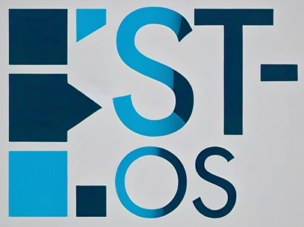

ST-OS (SoftTech Operating System) is a next-generation, lightweight and secure operating system built by SoftTech. Designed with speed, simplicity, and customization at its core, ST-OS caters to both individual users and enterprise environments.
Key features of ST-OS include:
Whether you are a developer, designer, or end-user, ST-OS delivers a seamless experience backed by the innovation of SoftTech. Stay ahead with an OS that evolves with your needs.